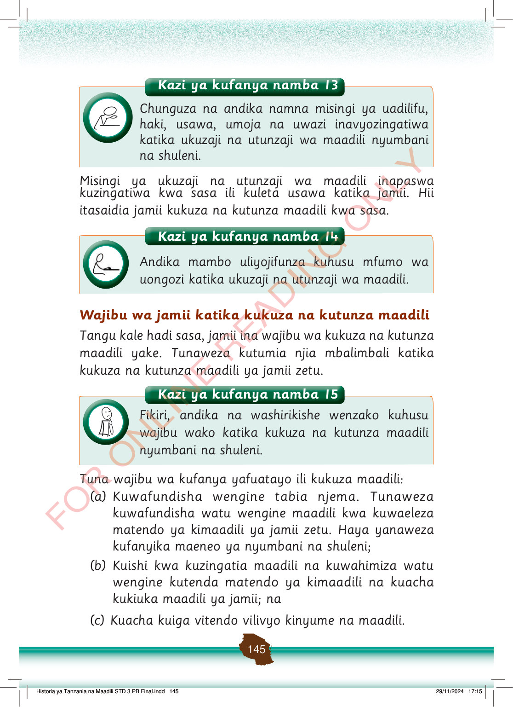

Kazi ya kufanya namba 13
Chunguza na andika namna misingi ya uadilifu, haki, usawa, umoja na uwazi inavyozingatiwa katika ukuzaji na utunzaji wa maadili nyumbani na shuleni.
Misingi ya ukuzaji na utunzaji wa maadili inapaswa kuzingatiwa kwa sasa ili kuleta usawa katika jamii.
Hii itasaidia jamii kukuza na kutunza maadili kwa sasa.
Wajibu wa jamii katika kukuza na kutunza maadili
Tangu kale hadi sasa, jamii ina wajibu wa kukuza na kutunza maadili yake.
Tunaweza kutumia njia mbalimbali katika kukuza na kutunza maadili ya jamii zetu.
Tuna wajibu wa kufanya yafuatayo ili kukuza maadili:
(a)
Kuwafundisha wengine tabia njema.
Tunaweza kuwafundisha watu wengine maadili kwa kuwaeleza matendo ya kimaadili ya jamii zetu.
Haya yanaweza kufanyika maeneo ya nyumbani na shuleni;
(b)
Kuishi kwa kuzingatia maadili na kuwahimiza watu wengine kutenda matendo ya kimaadili na kuacha kukiuka maadili ya jamii; na
(c)
Kuacha kuiga vitendo vilivyo kinyume na maadili.
Kazi ya kufanya namba 14
Andika mambo uliyojifunza kuhusu mfumo wa uongozi katika ukuzaji na utunzaji wa maadili.
Kazi ya kufanya namba 15
Mtu anaandika mezani.
Fikiri, andika na washirikishe wenzako kuhusu wajibu wako katika kukuza na kutunza maadili nyumbani na shuleni.